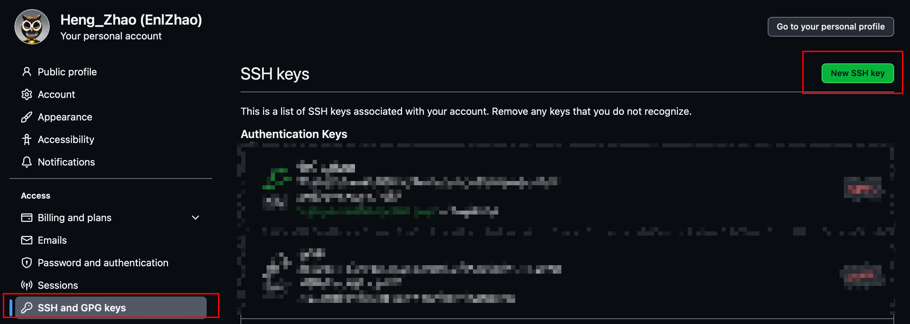

Getting started with Git👀
约 2288 个字 43 行代码 预计阅读时间 8 分钟
Set your username👀
name替换为
Caching credentials👀
建议直接用
ssh克隆
- 使用
HTTPS克隆仓库时，可以使用凭据帮助程序在 Git 中缓存 GitHub 凭据- 如果是使用
ssh克隆仓库，则不需要凭据帮助程序
Git passordwords👀
- 一般在使用
HTTPS克隆仓库时，会要求输入 GitHub credentials (用户名和密码) - 但此时的用户名密码并非 GitHub 账户密码，而是 GitHub personal access token
- 可以通过配置
Gitcache credentials 来避免每次都要求输入 GitHub credentials- 在配置凭据缓存后，当使用
HTTPS拉取或推送时，Git 将自动使用缓存的 personal access token
- 在配置凭据缓存后，当使用
SSH and GPG keys👀
配置
ssh公钥，可以在不输入 GitHub credentials 的情况下，与 GitHub 通信
- 查看公钥
id_rsa.pub文件
- 将其中内容复制到 GitHub 的
SSH and GPG keys中

{kind=link}
macOS Keychain credentials👀
- 从 macOS 更新密钥链凭据仅使用内置到 macOS 中的
osxkeychain凭据帮助程序手动配置了 personal access token 的用户- 还是建议使用
ssh或者 GCM | Git Credential Manager
Git workflows ｜ TODO👀
About remote repositories👀
关于远程仓库
- 远程 URL 是 Git 一种指示“您的代码存储位置”的绝佳方式
- 只能推送两类 URL 地址:
- HTTPS URL (例如
https://github.com/user/repo.git) - SSH URL (例如
git@github.com:user/repo.git)
- HTTPS URL (例如
- Git 将远程 URL 与名称相关联，默认远程通常命为
origin
创建远程仓库👀
可以使用 git remote add 命令将远程 URL 与名称匹配
Example
git remote add origin
将 origin 与 REMOTE_URL 关联
Manage remote repositories👀
添加远程仓库👀
- 使用
git remote add在终端存储存储库的目录中新增远程 git remote add采用两个参数:- 远程名称 (如
origin) - 远程 URL (如
https://github.com/user/repo.git)
- 远程名称 (如
Example
Troubleshooting: Remote origin already exists
此错误消息表示尝试添加的远程与本地仓库远程名称相同
$ git remote add origin https://github.com/octocat/Spoon-Knife.git
> fatal: remote origin already exists.
三种解决方法:
1. 对新远程使用不同名称
2. 在添加新远程时，重命名现有远程仓库
3. 在添加新远程前，删除现有远程仓库
更改远程仓库 URL👀
git remote set-url命令更改现有远程仓库 URL- 该命令采用两个参数:
- 现有远程仓库名称。如，
origin··· - 远程仓库的新 URL。如:
- 若要更新为使用 HTTPS，URL 形如
https://github.com/USERNAME/REPOSITORY.git - 若要更新为使用 SSH，URL 形如
git@github.com:USERNAME/REPOSITORY.git
- 若要更新为使用 HTTPS，URL 形如
- 现有远程仓库名称。如，
- 打开 Git Bash || 终端
- 将当前目录更改为本地仓库
- 列出现有仓库
- 使用
git remote set-url命令将远程 URL 从SSH 更改为 HTTPS
- 验证
$ git remote -v # Verify new remote URL > origin https://github.com/USERNAME/REPOSITORY.git (fetch) > origin https://github.com/USERNAME/REPOSITORY.git (push)下次将
git fetch、git pull、git push执行到远程存储库时，系统将要求提供 GitHub 用户名和密码。
可以使用 GitHub 凭据帮助程序，以便 Git 每次与 GitHub 通信时都会记住你的 GitHub 用户名和 personal access token
- 打开 Git Bash || 终端
- 将当前目录更改为本地仓库
- 列出现有仓库
- 使用
git remote set-url命令将远程 URL 从 HTTPS 更改为 SSH
- 验证
$ git remote -v # Verify new remote URL > origin git@github.com: USERNAME/REPOSITORY.git (fetch) > origin git@github.com: USERNAME/REPOSITORY.git (push)下次将
git fetch、git pull、git push执行到远程存储库时，系统将要求提供 GitHub 用户名和密码。
可以使用 GitHub 凭据帮助程序，以便 Git 每次与 GitHub 通信时都会记住你的 GitHub 用户名和 personal access token
重命名远程仓库👀
- 使用
git remote rename命令重命名现有远程 git remote rename命令采用两个参数:- 现有远程名称（如 original）
- 远程的新名称（如 destination）
删除远程仓库👀
- 使用
git remote rm命令从存储库中删除远程 URL。 - 该命令采用一个参数：
- 远程名称（例如 destination）
从存储库中删除远程 URL 只会取消本地和远程存储库的链接。 它不会删除远程存储库
git push👀
git push会将本地仓库的内容推送到远程仓库git push命令采用两个参数:- 远程仓库的名称 (如
origin) - 要推送的分支的名称 (如
main)
- 远程仓库的名称 (如
git push命令的默认行为是将本地分支推送到与之关联的远程分支- 例如，如果本地分支为
main，则git push将自动推送到远程分支origin/main - 可以使用
git push命令的--set-upstream标志将本地分支与远程分支关联起来git push --set-upstream origin main
- 可以使用
git push命令的--force标志强制推送到远程分支git push --force origin main
- 可以使用
git push命令的--all标志推送所有分支git push --all origin
Associate text editors👀
- 配置
git config中的core.editor选项，可以将文本编辑器与 Git 关联
Handle line endings | TODO👀
To avoid problems in your diffs, you can configure Git to properly handle line endings.
Ignoring files👀
- 即配置
.gitignore文件- 如果在配置前已经提交了某些文件，那么这些文件将会被追踪，即使在
.gitignore中配置了忽略它们
可以使用git rm --cached FILENAME命令来取消追踪这些文件
.gitignore 中使用正则表达式匹配文件
在 .gitignore 文件中，每一行的忽略规则的语法如下：
- 空格不匹配任意文件，可作为分隔符，可用反斜杠转义
#标识注释，可以使用反斜杠进行转义- 可以使用标准的 glob 模式匹配。所谓的 glob 模式是指 shell 所使用的简化了的正则表达式。
- 以斜杠 “/” 开头表示目录；”/” 结束的模式只匹配文件夹以及在该文件夹路径下的内容，但是不匹配该文件；
- ”/” 开始的模式匹配项目跟目录；
- 如果一个模式不包含斜杠，则它匹配相对于当前
.gitignore文件路径的内容，如果该模式不在.gitignore文件中，则相对于项目根目录
- ”*” 通配多个字符
- 使用两个星号”**” 表示匹配任意中间目录，比如
root/**/file可以匹配root/file,root/dir1/file或root/dir1/dir2/file…
- 使用两个星号”**” 表示匹配任意中间目录，比如
- ”?” 通配单个字符
- ”[]” 匹配任何 一个 列在方括号中的字符。比如
[abc]表示 a 或 b 或 c；- 如果在方括号中使用短划线分隔两个字符，表示所有在这两个字符范围内的都可以匹配。比如
[0-9]表示匹配所有 0 到 9 的数字，[a-z]表示匹配任意的小写字母
- 如果在方括号中使用短划线分隔两个字符，表示所有在这两个字符范围内的都可以匹配。比如
- ”!” 表示不忽略(跟踪)匹配到的文件或目录，即要忽略指定模式以外的文件或目录，可以在模式前加上惊叹号（!）取反
- 如果文件的父目录已经被前面的规则排除掉了，那么对这个文件用 “!” 规则是不起作用的
不使用 .gitignore 文件
Trivial commands | TODO👀
基本都可以用
-h查看手册
fetch & pull
git pull=git fetch+git merge- 建议优先使用
git fetch，因为git pull会自动合并，可能会导致冲突 pullgit pull会将远程仓库的内容拉取到本地git pull <remote>会将远程仓库的<remote>分支拉取到本地git pull <远程主机名> <远程分支名>:<本地分支名>会将远程仓库的<远程主机名>的<远程分支名>分支拉取到本地的<本地分支名>分支并合并 (e.g.git pull origin main:version1)- …
fetch操作与pull类似
clone
git clone <url>会将远程仓库克隆到本地git clone <url> <dir>会将远程仓库克隆到本地的<dir>目录下git clone <url> -b <branch>会将远程仓库的<branch>分支克隆到本地git clone <url> -b <branch> <dir>会将远程仓库的<branch>分支克隆到本地的<dir>目录下git clone <url> -b <branch> --single-branch会将远程仓库的<branch>分支克隆到本地，且只克隆该分支depth选项:git clone <url> --depth <depth>会将远程仓库克隆到本地，但是只克隆最近的<depth>个提交
shallow选项:git clone <url> --shallow-since=<date>会将远程仓库克隆到本地，但是只克隆最近的<date>之后的提交git clone <url> --shallow-exclude=<revision>会将远程仓库克隆到本地，但是不克隆<revision>之前的提交
…
branch & checkout
branchgit branch或git branch -l列出本地分支git branch -r列出远程分支git branch -a列出本地分支和远程分支git branch <branch>创建分支git branch -d <branch>删除分支;-D强制删除git branch -m <old> <new>重命名分支;-M强制重命名git branch -u <remote>/<branch>设置本地分支跟踪远程分支- …
checkoutgit checkout <branch>切换分支git checkout -b <branch>创建并切换到分支git checkout -b <branch> origin/<remote branch>创建并切换到分支，且跟踪远程分支- …
本文总阅读量:
次